分布式共识算法
历史
在早些的文献中，共识（consensus）也叫做协商（agreement）。
本文按照最有意义的顺序进行讨论，而不是按照发表的顺序。
我所知道的共识问题的第一个实例是在 Lamport 的 “Time, Clocks and the Ordering of Events in a Distributed System” (1978) 中，尽管它没有明确声明为共识或协商问题。在本文中，Lamport 讨论了消息如何在处理器之间以有限的时间传播，并与爱因斯坦的狭义相对论进行了类比。并给出了一个完整的分析，包括时空图等等。问题在于，在分布式系统中，您无法判断事件 A 是否发生在事件 B 之前，除非 A 以某种方式导致了 B。每个观察者都可以看到事件以不同的顺序发生，除了相互导致的事件，即在分布式系统中事件只有部分有序。Lamport 定义了“happens before”的关系和运算符，并继续提供一种算法，该算法提供分布式系统中事件的总排序，以便每个进程以与其他进程相同的顺序查看事件。
Lamport 还引入了 分布式状态机 的概念：在相同状态下启动一组确定性状态机，然后确保它们以相同的顺序处理相同的消息。每台机器现在都是其他机器的复制品。关键问题是让每个副本都同意下一个要处理的消息是什么：共识问题。这就是创建事件总排序的算法所做的，它为消息传递提供了一个约定的排序。但是，该系统不具有容错能力。如果一个进程失败，其他进程就必须等待它恢复。
大约与该文章同时，Gray 在 “Notes on Database Operating Systems” (1979) 中描述了 2PC。不幸的是，如果 TM（Transaction Manager）在错误的时间发生故障，2PC 会阻塞。Skeen 在 “NonBlocking Commit Protocols” (1981) 中表明，对于分布式事务，您需要一个 3 段式提交算法来避免与 2PC 相关的阻塞问题[1]，3PC。
Fischer、Lynch 和 Paterson 在 “Impossibility of Distributed Consensus with One Faulty Process” (1985) 中表明，在即使只有一个错误进程的异步系统中分布式共识也是不可能的，这也被称为著名的“FLP”结论。到了这个时候，“共识”是让一堆处理器同意一个值的问题的名称。在一个完全异步的系统中（处理器以任意速度运行，消息在处理器之间传输需要任意长的时间），有一个完美的网络（所有消息都被传递，消息按顺序到达并且不能复制）即使只有一个错误的进程（甚至只是一个故障停止），也不存在一个可以解决一致性问题的确定性共识算法 。问题的核心是在这种理论场景下您无法区分已停止的进程和运行非常缓慢的进程之间的区别，这使得在异步系统中处理故障几乎是不可能的。这种不可能的结果来自于最坏情况的调度场景，在实践中不太可能发生，除非在对抗的情况下，如网络中的智能拒绝服务攻击者。在大多数正常情况下，进程调度有一定程度的自然随机性。这篇论文也很重要，因为它展示了如何证明某事是不可能的：证明所有解决问题的算法都必须具有某种性质，然后证明这种性质是不可能的，即反证法。
在这个阶段，人们意识到分布式算法有两个特性：安全性（Safety）和活性（Liveness）。专业的资料一般翻译为协定性（Safety）和终止性（Liveness），协议性意味着所有的坏事都不会发生，而终止性意味着好事终会发生。2PC 是一种异步共识算法，所有进程必须就事务的提交或中止达成一致。2PC 是安全的：没有错误数据被写入数据库，但它的活跃性不是很好：如果 TM 在错误的点失败，系统将阻塞。
同样到了这个阶段，人们认为分布式系统是同步的（进程以已知的速率运行，消息在已知的时间范围内传递）或异步的（进程以未知的任意速率运行，并且消息可能需要无限的时间来传递）。异步情况比同步情况更普遍：适用于异步系统的算法也适用于同步系统，但反之则不然。您可以将同步系统视为异步系统的一个特例，它恰好对传递消息所需的时间有限制。
在 FLP 之前，有 拜占庭将军问题 “The Byzantine Generals Problem” (1982) 论文。在这种形式的共识问题中，进程可以撒谎，并且它们可以积极地试图欺骗其他进程。这个问题看起来比 FLP 结果更难，但它确实有同步情况的解决方案（尽管在写拜占庭将军论文时异步和同步系统之间的区别并不明确）。该解决方案在交换消息的数量上和所需的消息轮数方面代价高昂。问题最初来自航空航天工业：如果传感器在飞机上提供错误信息会发生什么（显然系统可以被视为同步）。
1986 年，对共识感兴趣的分布式系统人员和交易人员聚集在一起。当时最好的共识算法是拜占庭将军，但这对于事物来说太昂贵了。Jim Gray 写了一份会议记录：“A Comparison of the Byzantine Agreement Problem and the Transaction Commit Problem.” (1987) 。
该论文在介绍中包含此内容：“在会议之前，人们普遍认为分布式系统面临的事务提交问题是学术界研究的拜占庭将军问题的退化形式。也许这次会议最有用的结果是表明这两个问题几乎没有共同之处。”
最终，分布式事务将被视为共识的一种版本，称为统一共识（参见"Uniform consensus is harder than consensus" (2000)）。有了统一的共识，所有进程都必须就一个值达成一致，即使是错误的进程——只有当所有 RM[2] 都准备好提交时，事务才应该提交。大多数形式的共识只关注让非错误流程达成一致。统一共识比普遍共识更难。
最终，Lamport 提出了 Paxos 共识算法，在 “The Part-Time Parliament” (submitted in 1990, published 1998) 中有所描述。不幸的是，用希腊城邦作为比喻反而使得描述更为晦涩，人们发现这篇论文很难理解，这篇论文一直被忽略，直到 Butler Lampson 在 “How to Build a Highly Availability System using Consensus” (1996) 中讨论了这个问题。该文很好地介绍了构建容错系统和 Paxos。后来，Lamport 重新出版 "Paxos Made Simple (2001)。Paxos 的内核是给定一个固定数量的进程，它们中的大多数必须至少有一个共同的进程。例如，给定三个进程 A、B 和 C，可能的多数是：AB、AC 或 BC。如果在有多数票（例如 AB）时作出决定，那么在未来的任何时候，当另一个多数可用时，至少有一个进程可以记住前一个多数决定的内容。如果多数是 AB，则两个进程都会记住，如果存在 AC，则 A 会记住，如果存在 BC，则 B 会记住。
Paxos 可以容忍丢失的消息、延迟的消息、重复的消息和无序传递的消息。如果有一个领导者有足够的时间可以与大多数进程对话两次[3]，它们将达成共识。任何进程，包括领导者，都可能失败并重新启动；实际上所有进程都可能同时失败，算法仍然是安全的。一次也可以有多个领导者。
Paxos 是一种异步算法；没有明确的超时。然而，它只有在系统以同步方式运行时才达成共识，即消息在有限的时间段内传递；否则是安全的。根据 FLP，有一种特殊情况是 Paxos 不会达成共识，但这种理论设想在实践中相对容易避免[4]。
将系统明确划分为同步和异步的区别过于宽泛，而 Dwork、Lynch 和 Stockmeyer 在 “Consensus in the presence of partial synchrony” (1988) 中定义了 部分同步系统。部分同步系统有两种版本：一种是进程以已知范围内的速度运行，消息在有限时间内传递，但实际值事先未知；在另一个版本中，进程的速度范围和消息传递的上限是先验已知的，但它们只会在未来某个未知时间开始保持。部分同步模型是比同步或异步模型更好的现实世界模型；大多数情况下，网络以可预测的方式运行，但偶尔会出问题。
Lamport 和 Gray 在 “Consensus on Transaction Commit” (2005) 中继续将 Paxos 应用于分布式事务提交问题。他们使用 Paxos 有效地复制了 2PC 的 TM，并为事物中涉及的每个 RM 使用了一个 Paxos 实例来同意该 RM 是否可以提交该事物。从表面上看，每个 RM 使用一个 Paxos 实例看起来很昂贵，但事实证明并非如此。对于无故障情况，Paxos Commit 将分两个阶段完成，即它具有与 2PC 相同的消息延迟，但交换了更多消息。根据 Skeen 结果，仅当存在故障时才需要第三阶段。给定 2n+1 个 TM 副本，Paxos Commit 将完成最多 n 个错误副本。Paxos Commit 并没有直接使用 Paxos 来解决事务提交问题，即它不是用来解决统一共识的，而是用来使系统容错的。
任何因为 2PC 阻塞而不应使用分布式事务的论点都是无效的，如果将 2PC 中的 TM 做出 committed/aborted 决策这一步替换为一轮 Paxos，就能解决 2PC 的容错问题。但此时 TM 仍然需要先得知所有 RM 都 prepared，至少需要一轮消息延时。而本文提出的 Paxos Commit 算法则消除了这次延时。
最近有一些关于 CAP 猜想的讨论：一致性（Consistency）, 可用性（Availability）和 分区容忍性（Partition）。该猜想断言，在分布式系统中不能同时拥有这三个系统：一致的系统、可能有错误的进程以及能够处理网络分区的系统。
我们可以通过将一致性与共识等同起来来看 CAP。对于异步系统，我们无法就一个错误的进程达成共识，FLP，因此我们无法同时兼得异步系统的一致性和可用性！
现在以一个具有三个节点的 Paxos 系统为例：A、B 和 C。如果两个节点都在工作，我们就可以达成共识，即我们可以满足一致性和可用性。现在如果 C 被分区并且 C 被查询，它无法响应，因为它无法与其他节点通信；它不知道自己是否已分区，或者其他两个节点是否已关闭，或者网络是否非常慢。其他两个节点可以继续，因为它们可以相互交谈并且形成多数。所以对于 CAP 猜想，Paxos 不满足分区容忍性，因为 C 无法响应查询。然而，我们可以设计我们的方法来解决这个问题。如果我们在一个数据中心内，我们可以使用两个独立的网络（Paxos 不介意消息是否重复）。如果我们在互联网上，那么我们可以让我们的客户端查询所有节点 A、B 和 C，如果 C 被分区，则客户端可以查询 A 或 B，除非它以类似于 C 的方式分区。
对于同步网络，如果 C 被分区，如果它在固定时间段内没有收到消息，它可以知道它被分区，从而可以向客户端声明自己。
Paxos、Paxos Commit 和 HTTP/REST 结合起来构建了一个高可用的网格计算协同分配系统，详细信息可以在这里找到 HARC - The Highly-Available Resource Co-allocator ，这篇论文中还有更多的参考资料：“Co-Allocation, Fault Tolerance and Grid Computing” (2006)。
Paxos
Paxos 算法 —— Paxos 是由 Leslie Lamport 提出的一种基于消息传递且具有高度容错特性的分布式系统的共识算法。
现已是当今分布式系统最重要的理论基础，如果没有 Paxos，那后续的 Raft、ZAB 等算法，ZooKeeper、Etcd 这些分布式协调框架、Hadoop、Consul 这些在此基础上的各类分布式应用都很可能会延后好几年面世。
共识算法
假设有一个由多个进程组成的集合，集合里的每个进程都可以提议（可能不同的）值。共识算法保证在被提议的这些值中只有一个值能够被选定。一旦一个值被选定，则所有进程都需要能够获知（learn）这个被选定的值。共识算法的安全性要求做到：
- 只有被提议的值才可以被选定，
- 只能有一个值能被选定，
- 只有一个值真的已经“确定”被选定，其他进程才能获知这个值已被选定
我们不会尝试去明确精准的活性要求。无论如何，算法的目标是要保证被提议的值中有某个值能够被选定，并且一旦一个值被选定了，其他进程最终能够获知这个被选定的值。
我们让三类代理（agent）来执行这个共识算法中的三个角色：提议者（proposers）、接受者（acceptors）以及学习者（learners）。在实际实现中，一个独立的进程可以充当不止一个代理，但是从代理到进程之间的映射关系不是我们这里关注的重点。
设想代理之间可以通过发送消息的方式相互通信。我们使用传统的异步（模型），而不是拜占庭问题模型，也就是说：
- 代理以任意速度运行，可能因停止而失效（指不能正常工作），也可能重启。由于所有代理都有可能在一个值被选定之后失效再接着重启，除非失效或者重启的代理能够记住一些关键信息，否则没有任何解决方案。
- 消息发送的长度可以是任意的，消息也可以重复或者丢失，但消息不会被篡改。
算法描述
使用 Paxos 算法的分布式系统里的，所有的节点都是平等的，它们都可以承担以上某一种或者多种的角色，不过为了便于确保有明确的多数派，决策节点的数量应该被设定为奇数个，且在系统初始化时，网络中每个节点都知道整个网络所有决策节点的数量、地址等信息。
将提议者和接受者的行为都放在一起，我们可以看到这个算法的操作可以分为以下两个阶段：
1 | 阶段 1： |
“提案”始终意味着：一个提案编号加上一个提案的值。
整个过程的时序图如图所示。
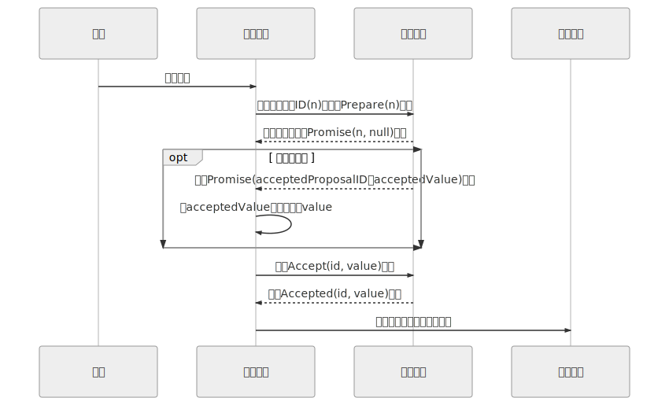
工作实例
假设一个分布式系统有五个节点，分别命名为 S1、S2、S3、S4、S5，这个例子中只讨论正常通信的场景，不涉及网络分区。全部节点都同时扮演着提案节点和决策节点的身份。此时，有两个并发的请求分别希望将同一个值分别设定为 X（由 S1作为提案节点提出）和 Y（由 S5作为提案节点提出），以 P 代表准备阶段，以 A 代表批准阶段，这时候可能发生以下情况：
-
情况一：譬如，S1 选定的提案 ID 是 3.1（全局唯一 ID 加上节点编号），先取得了多数派决策节点的承诺 Promise 应答和批准 Accepted 应答，此时 S5 选定提案 ID 是 4.5，发起 Prepare 请求，收到的多数派应答中至少会包含 1 个此前应答过 S1 的决策节点，假设是 S3，那么 S3 提供的 Promise 中必将包含 S1 已设定好的值 X，S5 就必须无条件地用 X 代替 Y 作为自己提案的值，由此整个系统对“取值为 X”这个事实达成一致，如图所示。
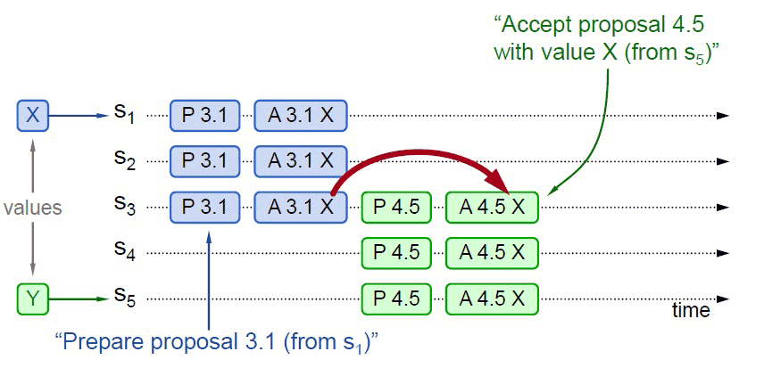
-
情况二：事实上，对于情况一，X 被选定为最终值是必然结果，但从上图中可以看出，X 被选定为最终值并不是必定需要多数派的共同批准，只取决于 S5 提案时 Promise 应答中是否已包含了批准过 X 的决策节点，譬如下图所示，S5 发起提案的 Prepare 请求时，X 并未获得多数派批准，但由于 S3 已经批准的关系，最终共识的结果仍然是 X。
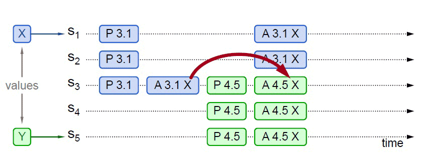
-
情况三：当然，另外一种可能的结果是 S5 提案时 Promise 应答中并未包含批准过 X 的决策节点，譬如应答 S5
提案时，节点 S1 已经批准了 X，节点 S2、S3未批准但返回了 Promise 应答，此时 S5 以更大的提案 ID 获得了 S3、S4、S5 的 Promise，这三个节点均未批准过任何值，那么 S3将不会再接收来自 S1 的 Accept 请求，因为它的提案 ID 已经不是最大的了，这三个节点将批准 Y 的取值，整个系统最终会对“取值为 Y”达成一致，如图所示。
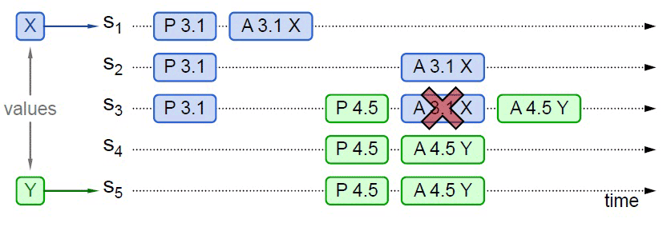
-
情况四：从情况三可以推导出另一种极端的情况，如果两个提案节点交替使用更大的提案 ID 使得准备阶段成功，但是批准阶段失败的话，这个过程理论上可以无限持续下去，形成活锁（Live Lock），如图所示。在算法实现中会引入随机超时时间来避免活锁的产生。
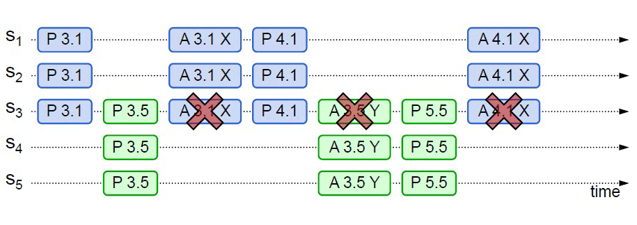
虽然 Paxos 是以复杂著称的算法，但以上介绍都是基于 Basic Paxos、以正常流程（未出现网络分区等异常）、通俗方式讲解的 Paxos 算法，并未涉及严谨的逻辑和数学原理，也未讨论 Paxos 的推导证明过程，对于普通的不从事算法研究的技术人员来说，理解起来应该也不算太困难。
Basic Paxos 的价值在于开拓了分布式共识算法的发展思路，但它因有如下缺陷，一般不会直接用于实践：Basic Paxos 只能对单个值形成决议，并且决议的形成至少需要两次网络请求和应答（准备和批准阶段各一次），高并发情况下将产生较大的网络开销，极端情况下甚至可能形成活锁。总之，Basic Paxos 是一种很学术化但对工业化并不友好的算法，现在几乎只用来做理论研究。实际的应用都是基于 Multi Paxos 和 Fast Paxos 算法的，接下来我们将会了解 Multi Paxos 与一些它的理论等价的算法（如 Raft、ZAB 等算法）。
Multi Paxos
上一节的最后，笔者举例介绍了 Basic Paxos 的活锁问题，两个提案节点互不相让地争相提出自己的提案，抢占同一个值的修改权限，导致整个系统在持续性地“反复横跳”，外部看起来就像被锁住了一样。此外，笔者还讲述过一个观点，分布式共识的复杂性，主要来源于网络的不可靠与请求的可并发两大因素，活锁问题与许多 Basic Paxos 异常场景中所遭遇的麻烦，都可以看作是源于任何一个提案节点都能够完全平等地、与其他节点并发地提出提案而带来的复杂问题。为此，Lamport 专门设计（“专门设计”的意思是在 Paxos 的论文中 Lamport 随意提了几句可以这么做）了一种 Paxos 的改进版本“Multi Paxos”算法，希望能够找到一种两全其美的办法，既不破坏 Paxos 中“众节点平等”的原则，又能在提案节点中实现主次之分，限制每个节点都有不受控的提案权利，这两个目标听起来似乎是矛盾的，但现实世界中的选举就很符合这种在平等节点中挑选意见领袖的情景。
Multi Paxos 对 Basic Paxos 的核心改进是增加了“选主”的过程，提案节点会通过定时轮询（心跳），确定当前网络中的所有节点里是否存在有一个主提案节点，一旦没有发现主节点存在，节点就会在心跳超时后使用 Basic Paxos 中定义的准备、批准的两轮网络交互过程，向所有其他节点广播自己希望竞选主节点的请求，希望整个分布式系统对“由我作为主节点”这件事情协商达成一致共识，如果得到了决策节点中多数派的批准，便宣告竞选成功。当选主完成之后，除非主节点失联之后发起重新竞选，否则从此往后，就只有主节点本身才能够提出提案。此时，无论哪个提案节点接收到客户端的操作请求，都会将请求转发给主节点来完成提案，而主节点提案的时候，也就无需再次经过准备过程，因为可以视作是经过选举时的那一次准备之后，后续的提案都是对相同提案 ID 的一连串的批准过程。也可以通俗理解为选主过后，就不会再有其他节点与它竞争，相当于是处于无并发的环境当中进行的有序操作，所以此时系统中要对某个值达成一致，只需要进行一次批准的交互即可，如图所示。
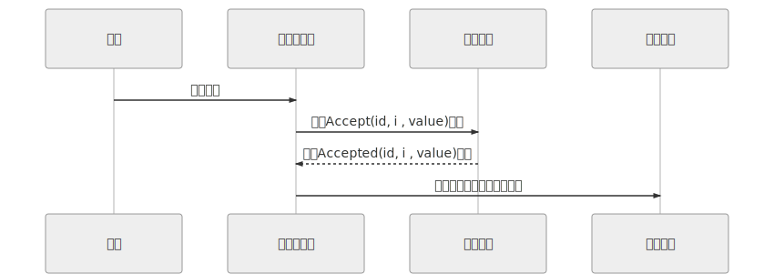
可能有人注意到这时候的二元组 (id, value) 已经变成了三元组 (id, i, value)，这是因为需要给主节点增加一个“任期编号”，这个编号必须是严格单调递增的，以应付主节点陷入网络分区后重新恢复，但另外一部分节点仍然有多数派，且已经完成了重新选主的情况（脑裂），此时必须以任期编号大的主节点为准。当节点有了选主机制的支持，在整体来看，就可以进一步简化节点角色，不去区分提案、决策和记录节点了，统统以“节点”来代替，节点只有主（Leader）和从（Follower）的区别，此时协商共识的时序图如图所示。
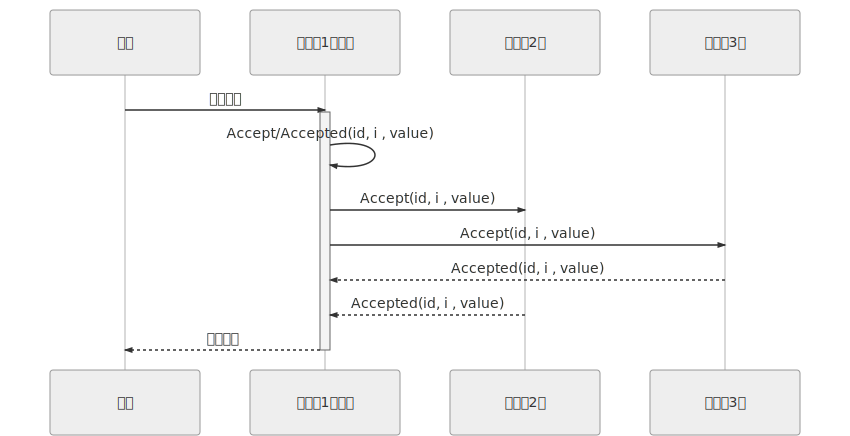
在这个理解的基础上，我们换一个角度来重新思考“分布式系统中如何对某个值达成一致”这个问题，可以把该问题划分做三个子问题来考虑，可以证明（具体证明就不列在这里了，感兴趣的读者可参考结尾给出的论文）当以下三个问题同时被解决时，即等价于达成共识：
- 如何选主（
Leader Election）。 - 如何把数据复制到各个节点上（
Log Replication）。 - 如何保证过程是安全的（
Safety）。
选主问题尽管还涉及许多工程上的细节，譬如心跳、随机超时、并行竞选，等等，但要只论原理的话，如果你已经理解了 Paxos 算法的操作步骤，相信对选主并不会有什么疑惑，因为这本质上仅仅是分布式系统对“谁来当主节点”这件事情的达成的共识而已，我们在前一节已经花了数千字来讲述分布式系统该如何对一件事情达成共识，这里就不重复赘述了，下面直接来解决数据（Paxos 中的提案、Raft 中的日志）在网络各节点间的复制问题。
在正常情况下，当客户端向主节点发起一个操作请求，譬如提出“将某个值设置为 X”，此时主节点将 X 写入自己的变更日志，但先不提交，接着把变更 X 的信息在下一次心跳包中广播给所有的从节点，并要求从节点回复确认收到的消息，从节点收到信息后，将操作写入自己的变更日志，然后给主节点发送确认签收的消息，主节点收到过半数的签收消息后，提交自己的变更、应答客户端并且给从节点广播可以提交的消息，从节点收到提交消息后提交自己的变更，数据在节点间的复制宣告完成。
在异常情况下，网络出现了分区，部分节点失联，但只要仍能正常工作的节点的数量能够满足多数派（过半数）的要求，分布式系统就仍然可以正常工作，这时候数据复制过程如下：
- 假设有 S1、S2、S3、S4、S5 五个节点，S1是主节点，由于网络故障，导致 S1、S2 和 S3、S4、S5 之间彼此无法通信，形成网络分区。
- 一段时间后，S3、S4、S5 三个节点中的某一个（譬如是 S3）最先达到心跳超时的阈值，获知当前分区中已经不存在主节点了，它向所有节点发出自己要竞选的广播，并收到了 S4、S5 节点的批准响应，加上自己一共三票，即得到了多数派的批准，竞选成功，此时系统中同时存在 S1和 S3 两个主节点，但由于网络分区，它们不会知道对方的存在。
- 这种情况下，客户端发起操作请求：
- 如果客户端连接到了 S1、S2 之一，都将由 S1 处理，但由于操作只能获得最多两个节点的响应，不构成多数派的批准，所以任何变更都无法成功提交。
- 如果客户端连接到了 S3、S4、S5 之一，都将由 S3 处理，此时操作可以获得最多三个节点的响应，构成多数派的批准，是有效的，变更可以被提交，即系统可以继续提供服务。
- 事实上，以上两种“如果”情景很少机会能够并存。网络分区是由于软、硬件或者网络故障而导致的，内部网络出现了分区，但两个分区仍然能分别与外部网络的客户端正常通信的情况甚为少见。更多的场景是算法能容忍网络里下线了一部分节点，按照这个例子来说，如果下线了两个节点，系统正常工作，下线了三个节点，那剩余的两个节点也不可能继续提供服务了。
- 假设现在故障恢复，分区解除，五个节点可以重新通信了：
- S1 和 S3 都向所有节点发送心跳包，从各自的心跳中可以得知两个主节点里 S3 的任期编号更大，它是最新的，此时五个节点均只承认 S3 是唯一的主节点。
- S1、S2 回滚它们所有未被提交的变更。
- S1、S2 从主节点发送的心跳包中获得它们失联期间发生的所有变更，将变更提交写入本地磁盘。
- 此时分布式系统各节点的状态达成最终一致。
下面我们来看第三个问题：“如何保证过程是安全的”，不知你是否感觉到这个问题与前两点的存在一点差异？选主、数据复制都是很具体的行为，但是“安全”就很模糊，什么算是安全或者不安全？
在分布式理论中，Safety 和 Liveness 两种属性是有预定义的术语，在专业的资料中一般翻译成“协定性”和“终止性”，这两个概念也是由 Lamport 最先提出，当时给出的定义是：
- 协定性（Safety）：所有的坏事都不会发生（something “bad” will never happen）。
- 终止性（Liveness）：所有的好事都终将发生，但不知道是啥时候（something “good” will must happen, but we don’t know when）。
这种就算解释了你也看不明白的定义，是不是很符合 Lamport 老爷子一贯的写作风格？（笔者无奈地摊手苦笑）。我们不去纠结严谨的定义，仍通过举例来说明它们的具体含义。譬如以选主问题为例，Safety 保证了选主的结果一定是有且只有唯一的一个主节点，不可能同时出现两个主节点；而 Liveness 则要保证选主过程是一定可以在某个时刻能够结束的。由前面对活锁的介绍可以得知，在 Liveness 这个属性上选主问题是存在理论上的瑕疵的，可能会由于活锁而导致一直无法选出明确的主节点，所以 Raft 论文中只写了对 Safety 的保证，但由于工程实现上的处理，现实中是几乎不可能会出现终止性的问题。
最后，以上这种把共识问题分解为 “Leader Election”、“Log Replication” 和 “Safety” 三个问题来思考、解决的解题思路，即 “Raft 算法”，这篇以《一种可以让人理解的共识算法》（In Search of an Understandable Consensus Algorithm）为题的论文提出了 Raft 算法，并获得了 USENIX ATC 2014 大会的 Best Paper，后来更是成为 Etcd、LogCabin、Consul 等重要分布式程序的实现基础，ZooKeeper 的 ZAB 算法与 Raft 的思路也非常类似，这些算法都被认为是 Multi Paxos 的等价派生实现。
复制状态机（Replicated state machines）
一致性算法是在[复制状态机]的背景下产生的。 在这种方法中，一组服务器上的状态机计算相同状态的相同副本，并且即使某些服务器宕机，也可以继续运行。
复制状态机用于解决分布式系统中的各种容错问题。 例如，具有单个 leader 的大规模系统，如 GFS，HDFS 和 RAMCloud ，通常使用单独的复制状态机来进行 leader 选举和存储 leader 崩溃后重新选举需要的配置信息。Chubby 和 ZooKeeper 都是复制状态机。
复制状态机通常使用复制日志实现，如图1所示。每个服务器存储一个包含一系列命令的日志，其状态机按顺序执行日志中的命令。 每个日志中命令都相同并且顺序也一样，因此每个状态机处理相同的命令序列。 这样就能得到相同的状态和相同的输出序列。
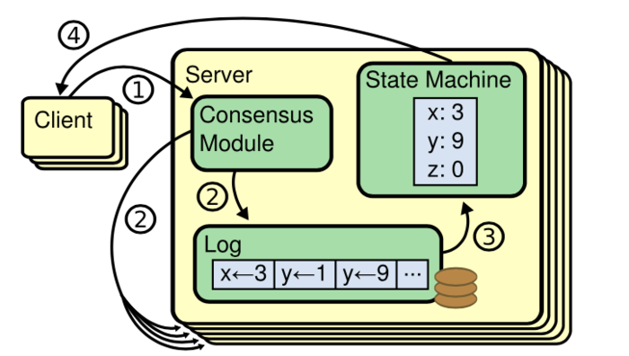
一致性算法的工作就是保证复制日志的一致性。 每台服务器上的一致性模块接收来自客户端的命令，并将它们添加到其日志中。 它与其他服务器上的一致性模块通信，以确保每个日志最终以相同的顺序包含相同的命令，即使有一些服务器失败。 一旦命令被正确复制，每个服务器上的状态机按日志顺序处理它们，并将输出返回给客户端。 这样就形成了高可用的复制状态机。
实际系统中的一致性算法通常具有以下属性：
- 它们确保在所有非拜占庭条件下（包括网络延迟，分区和数据包丢失，重复和乱序）的安全性（不会返回不正确的结果）。
- 只要任何大多数（过半）服务器都可以运行，并且可以相互通信和与客户通信，一致性算法就可用。 因此，五台服务器的典型集群可以容忍任何两台服务器的故障。 假设服务器突然宕机; 它们可以稍后从状态恢复并重新加入群集。
- 它们不依赖于时序来确保日志的一致性：错误的时钟和极端消息延迟可能在最坏的情况下导致可用性问题。
- 在通常情况下，只要集群的大部分（过半服务器）已经响应了单轮远程过程调用，命令就可以完成; 少数（一半以下）慢服务器不需要影响整个系统性能。
Raft
Raft 算法内容节选自：In Search of an Understandable Consensus Algorithm
该算法的关键特性图：
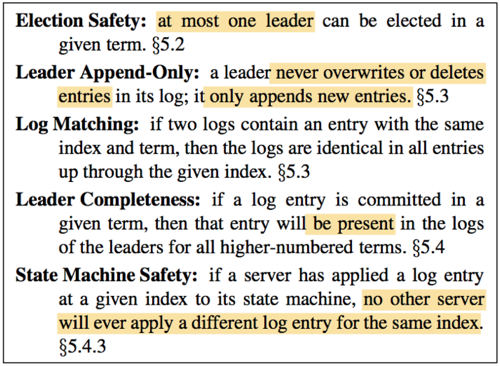
一个 Raft 集群包含若干个服务器节点；通常是 5 个，这样的系统可以容忍 2 个节点的失效。在任何时刻，每一个服务器节点都处于这三个状态之一：主节点 - Leader、从节点 - Follower 或者候选节点 - Candidate 。
在正常情况下，集群中只有一个 leader 并且其他的节点全部都是 follower 。
Follower 都是被动的：他们不会发送任何请求，只是简单的响应来自 leader 和 candidate 的请求。
Leader 处理所有的客户端请求（如果一个客户端和 follower 通信，follower 会将请求重定向给 leader）。
第三种状态，Candidate ，是用来选举一个新的 leader。下图展示了这些状态和他们之间的转换关系；这些转换关系在接下来会进行讨论。
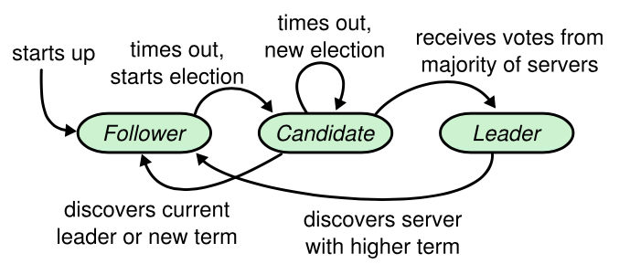
Raft 把时间分割成任意长度的任期（term），如下图所示。任期用连续的整数标记。每一段任期从一次选举开始，一个或者多个 candidate 尝试成为 leader 。如果一个 candidate 赢得选举，然后他就在该任期剩下的时间里充当 leader 。在某些情况下，一次选举无法选出 leader 。在这种情况下，这一任期会以没有 leader 结束；一个新的任期（包含一次新的选举）会很快重新开始。Raft 保证了在任意一个任期内，最多只有一个 leader 。
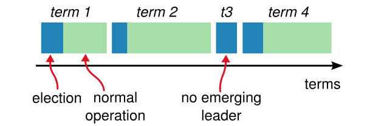
不同的服务器节点观察到的任期转换的次数可能不同，在某些情况下，一个服务器节点可能没有看到 leader 选举过程或者甚至整个任期全程。任期在 Raft 算法中充当逻辑时钟的作用，这使得服务器节点可以发现一些过期的信息比如过时的 leader 。每一个服务器节点存储一个当前任期号，该编号随着时间单调递增。服务器之间通信的时候会交换当前任期号；如果一个服务器的当前任期号比其他的小，该服务器会将自己的任期号更新为较大的那个值。如果一个 candidate 或者 leader 发现自己的任期号过期了，它会立即回到 follower 状态。如果一个节点接收到一个包含过期的任期号的请求，它会直接拒绝这个请求。
Raft 算法中服务器节点之间使用 RPC 进行通信，并且基本的一致性算法只需要两种类型的 RPC。请求投票（RequestVote） RPC 由 candidate 在选举期间发起，追加条目（AppendEntries）RPC 由 leader 发起，用来复制日志和提供一种心跳机制。为了在服务器之间传输快照增加了第三种 RPC。当服务器没有及时的收到 RPC 的响应时，会进行重试， 并且他们能够并行的发起 RPC 来获得最佳的性能。
Leader 选举
Raft 使用一种心跳机制来触发 leader 选举。当服务器程序启动时，他们都是 follower 。一个服务器节点只要能从 leader 或 candidate 处接收到有效的 RPC 就一直保持 follower 状态。Leader 周期性地向所有 follower 发送心跳（不包含日志条目的 AppendEntries RPC）来维持自己的地位。如果一个 follower 在一段选举超时时间内没有接收到任何消息，它就假设系统中没有可用的 leader ，然后开始进行选举以选出新的 leader。
要开始一次选举过程，follower 先增加自己的当前任期号并且转换到 candidate 状态。然后投票给自己并且并行地向集群中的其他服务器节点发送 RequestVote RPC（让其他服务器节点投票给它）。Candidate 会一直保持当前状态直到以下三件事情之一发生：(a) 它自己赢得了这次的选举（收到过半的投票），(b) 其他的服务器节点成为 leader ，© 一段时间之后没有任何获胜者。这些结果会在下面的章节里分别讨论。
当一个 candidate 获得集群中过半服务器节点针对同一个任期的投票，它就赢得了这次选举并成为 leader 。对于同一个任期，每个服务器节点只会投给一个 candidate ，按照先来先服务（first-come-first-served）的原则（注意：安全性一节在投票上增加了额外的限制）。要求获得过半投票的规则确保了最多只有一个 candidate 赢得此次选举（关键特性图中的选举安全性）。一旦 candidate 赢得选举，就立即成为 leader 。然后它会向其他的服务器节点发送心跳消息来确定自己的地位并阻止新的选举。
在等待投票期间，candidate 可能会收到另一个声称自己是 leader 的服务器节点发来的 AppendEntries RPC 。如果这个 leader 的任期号（包含在 RPC 中）不小于 candidate 当前的任期号，那么 candidate 会承认该 leader 的合法地位并回到 follower 状态。 如果 RPC 中的任期号比自己的小，那么 candidate 就会拒绝这次的 RPC 并且继续保持 candidate 状态。
第三种可能的结果是 candidate 既没有赢得选举也没有输：如果有多个 follower 同时成为 candidate ，那么选票可能会被瓜分以至于没有 candidate 赢得过半的投票。当这种情况发生时，每一个 Candidate 都会超时，然后通过增加当前任期号来开始一轮新的选举。然而，如果没有其他机制的话，该情况可能会无限重复。
Raft 算法使用随机选举超时时间的方法来确保很少发生选票瓜分的情况，就算发生也能很快地解决。为了阻止选票一开始就被瓜分，选举超时时间是从一个固定的区间（例如 150-300 毫秒）随机选择。这样可以把服务器都分散开以至于在大多数情况下只有一个服务器会选举超时；然后该服务器赢得选举并在其他服务器超时之前发送心跳。同样的机制被用来解决选票被瓜分的情况。每个 candidate 在开始一次选举的时候会重置一个随机的选举超时时间，然后一直等待直到选举超时；这样减小了在新的选举中再次发生选票瓜分情况的可能性。
选举的例子可以很好地展示可理解性是如何指导我们选择设计方案的。起初我们打算使用一种等级系统（ranking system）：每一个 candidate 都被赋予一个唯一的等级（rank），等级用来在竞争的 candidate 之间进行选择。如果一个 candidate 发现另一个 candidate 拥有更高的等级，它就会回到 follower 状态，这样高等级的 candidate 能够更加容易地赢得下一次选举。但是我们发现这种方法在可用性方面会有一下小问题。我们对该算法进行了多次调整，但是每次调整之后都会有新的小问题。最终我们认为随机重试的方法更加显然且易于理解。
日志复制
Leader 一旦被选举出来，就开始为客户端请求提供服务。客户端的每一个请求都包含一条将被复制状态机执行的指令。Leader 把该指令作为一个新的条目追加到日志中去，然后并行的发起 AppendEntries RPC 给其他的服务器，让它们复制该条目。当该条目被安全地复制（下面会介绍），leader 会应用该条目到它的状态机中（状态机执行该指令）然后把执行的结果返回给客户端。如果 follower 崩溃或者运行缓慢，或者网络丢包， Leader 会不断地重试 AppendEntries RPC（即使已经回复了客户端）直到所有的 follower 最终都存储了所有的日志条目。
日志以下图展示的方式组织。每个日志条目存储一条状态机指令和 leader 收到该指令时的任期号。任期号用来检测多个日志副本之间的不一致情况，同时也用来保证关键特性图中的某些性质。每个日志条目都有一个整数索引值来表明它在日志中的位置。
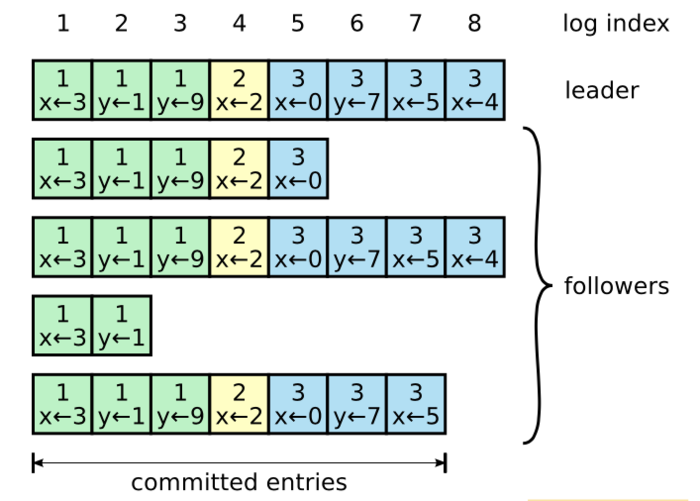
Leader 决定什么时候把日志条目应用到状态机中是安全的；这种日志条目被称为**已提交（Committed）**的。Raft 算法保证所有已提交的日志条目都是持久化的并且最终会被所有可用的状态机执行。一旦创建该日志条目的 leader 将它复制到过半的服务器上，该日志条目就为已提交（例如在上图中的条目 7）。同时，leader 日志中该日志条目之前的所有日志条目也都会被提交，包括由其他 leader 创建的条目。Leader 追踪将会被提交的日志条目的最大索引，未来的所有 AppendEntries RPC 都会包含该索引，这样其他的服务器才能最终知道哪些日志条目需要被提交。Follower 一旦知道某个日志条目已经被提交就会将该日志条目应用到自己的本地状态机中（按照日志的顺序）。
我们设计了 Raft 的日志机制来维持不同服务器之间日志高层次的一致性。这么做不仅简化了系统的行为也使得系统行为更加可预测，同时该机制也是保证安全性的重要组成部分。Raft 维护着以下特性，这些同时也构成了关键特性图中的 Log Matching Property（日志匹配特性） ：
- 如果不同日志中的两个条目拥有相同的索引和任期号，那么他们存储了相同的指令。
- 如果不同日志中的两个条目拥有相同的索引和任期号，那么他们之前的所有日志条目也都相同。
Leader 在特定的任期号内的一个日志索引处最多创建一个日志条目，同时日志条目在日志中的位置也从来不会改变。该点保证了上面的第一条特性。第二个特性是由 AppendEntries RPC 执行一个简单的一致性检查所保证的。在发送 AppendEntries RPC 的时候，leader 会将前一个日志条目的索引位置和任期号包含在里面。如果 follower 在它的日志中找不到包含相同索引位置和任期号的条目，那么他就会拒绝该新的日志条目。一致性检查就像一个归纳步骤：一开始空的日志状态肯定是满足日志匹配特性的，然后一致性检查保证了日志扩展时的日志匹配特性。因此，每当 AppendEntries RPC 返回成功时，leader 就知道 follower 的日志一定和自己相同（从第一个日志条目到最新条目）。
正常操作期间，leader 和 follower 的日志保持一致，所以 AppendEntries RPC 的一致性检查从来不会失败。然而，leader 崩溃的情况会使日志处于不一致的状态（老的 leader 可能还没有完全复制它日志里的所有条目）。这种不一致会在一系列的 leader 和 follower 崩溃的情况下加剧。下图展示了在什么情况下 follower 的日志可能和新的 leader 的日志不同。Follower 可能缺少一些在新 leader 中有的日志条目，也可能拥有一些新 leader 没有的日志条目，或者同时发生。缺失或多出日志条目的情况可能会涉及到多个任期。
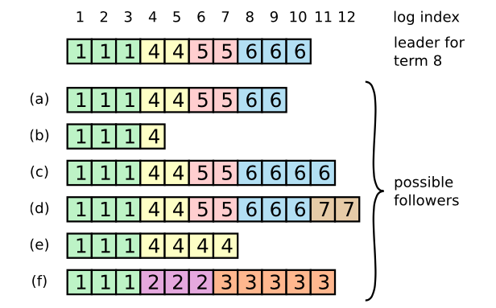
当一个 leader 成功当选时（最上面那条日志），follower 可能是（a-f）中的任何情况。每一个盒子表示一个日志条目；里面的数字表示任期号。Follower 可能会缺少一些日志条目（a-b），可能会有一些未被提交的日志条目（c-d），或者两种情况都存在（e-f）。例如，场景 f 可能这样发生，f 对应的服务器在任期 2 的时候是 leader ，追加了一些日志条目到自己的日志中，一条都还没提交（commit）就崩溃了；该服务器很快重启，在任期 3 重新被选为 leader，又追加了一些日志条目到自己的日志中；在这些任期 2 和任期 3 中的日志都还没被提交之前，该服务器又宕机了，并且在接下来的几个任期里一直处于宕机状态。
在 Raft 算法中，leader 通过强制 follower 复制它的日志来解决不一致的问题。这意味着 follower 中跟 leader 冲突的日志条目会被 leader 的日志条目覆盖。安全性一节会证明通过增加一个限制可以保证安全性。
要使得 follower 的日志跟自己一致，leader 必须找到两者达成一致的最大的日志条目（索引最大），删除 follower 日志中从那个点之后的所有日志条目，并且将自己从那个点之后的所有日志条目发送给 follower 。所有的这些操作都发生在对 AppendEntries RPCs 中一致性检查的回复中。Leader 针对每一个 follower 都维护了一个 nextIndex ，表示 leader 要发送给 follower 的下一个日志条目的索引。当选出一个新 leader 时，该 leader 将所有 nextIndex 的值都初始化为自己最后一个日志条目的 index 加1（上图中的 11）。如果 follower 的日志和 leader 的不一致，那么下一次 AppendEntries RPC 中的一致性检查就会失败。在被 follower 拒绝之后，leaer 就会减小 nextIndex 值并重试 AppendEntries RPC 。最终 nextIndex 会在某个位置使得 leader 和 follower 的日志达成一致。此时，AppendEntries RPC 就会成功，将 follower 中跟 leader 冲突的日志条目全部删除然后追加 leader 中的日志条目（如果有需要追加的日志条目的话）。一旦 AppendEntries RPC 成功，follower 的日志就和 leader 一致，并且在该任期接下来的时间里保持一致。
如果想要的话，该协议可以被优化来减少被拒绝的
AppendEntriesRPC 的个数。例如，当拒绝一个AppendEntriesRPC 的请求的时候，follower 可以包含冲突条目的任期号和自己存储的那个任期的第一个 index 。借助这些信息，leader 可以跳过那个任期内所有冲突的日志条目来减小 nextIndex；这样就变成每个有冲突日志条目的任期需要一个AppendEntriesRPC 而不是每个条目一次。在实践中，我们认为这种优化是没有必要的，因为失败不经常发生并且也不可能有很多不一致的日志条目。
通过这种机制，leader 在当权之后就不需要任何特殊的操作来使日志恢复到一致状态。Leader 只需要进行正常的操作，然后日志就能在回复 AppendEntries 一致性检查失败的时候自动趋于一致。Leader 从来不会覆盖或者删除自己的日志条目（关键特性图 的 Leader Append-Only 属性）。
这样的日志复制机制展示了一致性特性：只要过半的服务器能正常运行，Raft 就能够接受，复制并应用新的日志条目；在正常情况下，新的日志条目可以在一个 RPC 来回中被复制给集群中的过半机器；并且单个运行慢的 follower 不会影响整体的性能。
安全性
前面的章节里描述了 Raft 算法是如何进行 leader 选举和日志复制的。然而，到目前为止描述的机制并不能充分地保证每一个状态机会按照相同的顺序执行相同的指令。例如，一个 follower 可能会进入不可用状态，在此期间，leader 可能提交了若干的日志条目，然后这个 follower 可能会被选举为 leader 并且用新的日志条目覆盖这些日志条目；结果，不同的状态机可能会执行不同的指令序列。
这节通过对 leader 选举增加一个限制来完善 Raft 算法。这一限制保证了对于给定的任意任期号， leader 都包含了之前各个任期所有被提交的日志条目（图 3 中的 Leader Completeness 性质）。有了这一 leader 选举的限制，我们也使得提交规则更加清晰。最后，我们展示了对于 Leader Completeness 性质的简要证明并且说明该性质是如何领导复制状态机执行正确的行为的。
选举限制
在任何基于 leader 的一致性算法中，leader 最终都必须存储所有已经提交的日志条目。在某些一致性算法中，例如 Viewstamped Replication，一开始并没有包含所有已经提交的日志条目的服务器也可能被选为 leader 。这种算法包含一些额外的机制来识别丢失的日志条目并将它们传送给新的 leader ，要么是在选举阶段要么在之后很快进行。不幸的是，这种方法会导致相当大的额外的机制和复杂性。Raft 使用了一种更加简单的方法，它可以保证新 leader 在当选时就包含了之前所有任期号中已经提交的日志条目，不需要再传送这些日志条目给新 leader 。这意味着日志条目的传送是单向的，只从 leader 到 follower，并且 leader 从不会覆盖本地日志中已经存在的条目。
Raft 使用投票的方式来阻止 candidate 赢得选举除非该 candidate 包含了所有已经提交的日志条目。 Candidate 为了赢得选举必须与集群中的过半节点通信，这意味着至少其中一个服务器节点包含了所有已提交的日志条目。如果 candidate 的日志至少和过半的服务器节点一样新（接下来会精确地定义“新”），那么他一定包含了所有已经提交的日志条目。RequestVote RPC 执行了这样的限制： RPC 中包含了 candidate 的日志信息，如果投票者自己的日志比 candidate 的还新，它会拒绝掉该投票请求。
Raft 通过比较两份日志中最后一条日志条目的索引值和任期号来定义谁的日志比较新。如果两份日志最后条目的任期号不同，那么任期号大的日志更新。如果两份日志最后条目的任期号相同，那么日志较长的那个更新。
提交之前任期内的日志条目
如同日志复制节描述的那样，一旦当前任期内的某个日志条目已经存储到过半的服务器节点上，leader 就知道该日志条目已经被提交了。如果某个 leader 在提交某个日志条目之前崩溃了，以后的 leader 会试图完成该日志条目的复制。然而，如果是之前任期内的某个日志条目已经存储到过半的服务器节点上，leader 也无法立即断定该日志条目已经被提交了。下图展示了一种情况，一个已经被存储到过半节点上的老日志条目，仍然有可能会被未来的 leader 覆盖掉。

如图的时间序列展示了为什么 leader 无法判断老的任期号内的日志是否已经被提交。在 (a) 中，S1 是 leader ，部分地复制了索引位置 2 的日志条目。在 (b) 中，S1 崩溃了，然后 S5 在任期 3 中通过 S3、S4 和自己的选票赢得选举，然后从客户端接收了一条不一样的日志条目放在了索引 2 处。然后到 ©，S5 又崩溃了；S1 重新启动，选举成功，继续复制日志。此时，来自任期 2 的那条日志已经被复制到了集群中的大多数机器上，但是还没有被提交。如果 S1 在 (d) 中又崩溃了，S5 可以重新被选举成功（通过来自 S2，S3 和 S4 的选票），然后覆盖了他们在索引 2 处的日志。但是，在崩溃之前，如果 S1 在自己的任期里复制了日志条目到大多数机器上，如 (e) 中，然后这个条目就会被提交（S5 就不可能选举成功）。 在这种情况下，之前的所有日志也被提交了。
为了消除图中描述的问题，Raft 永远不会通过计算副本数目的方式来提交之前任期内的日志条目。只有 leader 当前任期内的日志条目才通过计算副本数目的方式来提交；一旦当前任期的某个日志条目以这种方式被提交，那么由于日志匹配特性，之前的所有日志条目也都会被间接地提交。在某些情况下， Leader 可以安全地断定一个老的日志条目已经被提交（例如，如果该条目已经存储到所有服务器上），但是 Raft 为了简化问题使用了一种更加保守的方法。
Raft 会在提交规则上增加额外的复杂性是因为当 leader 复制之前任期内的日志条目时，这些日志条目都保留原来的任期号。在其他的一致性算法中，如果一个新的 leader 要重新复制之前的任期里的日志时，它必须使用当前新的任期号。Raft 的做法使得更加容易推导出（reason about）日志条目，因为他们自始至终都使用同一个任期号。另外，和其他的算法相比，Raft 中的新 leader 只需要发送更少的日志条目（其他算法中必须在它们被提交之前发送更多的冗余日志条目来给它们重新编号）。
引用及参考
- A brief history of Consensus, 2PC and Transaction Commit.
- 《Paxos Made Simple》中文翻译：Paxos 如此简单
- [笔记] Consensus on Transaction Commit
- Paxos
- Raft论文翻译
- The Raft Consensus Algorithm
- The Secret Lives of Data
一旦宕机的不是其中某个参与者，而是协调者的话，所有参与者都会受到影响。如果协调者一直没有恢复，没有正常发送 Commit 或者 Rollback 的指令，那所有参与者都必须一直等待。 ↩︎
分布式系统中处理事务的进程称为 Resource Manager（RM）。每个 RM 可以自行决定事务中与自己有关的部分要 commit 还是 abort，而整个事务想要 commit 则必须所有参与的 RM 都同意 commit。整个 transaction commit 的关键就在于所有 RM 要对事务是 commit 还是 abort 达成共识。 ↩︎
两次为两阶段，一阶段发出提案，二阶段对特案中的值进行批准达成共识。 ↩︎
如果两个提案节点交替使用更大的提案 ID 使得准备阶段成功，但是批准阶段失败的话，这个过程理论上可以无限持续下去，形成活锁（Live Lock），详见：Paxos。 ↩︎